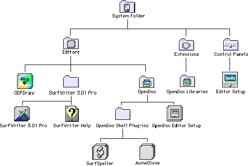
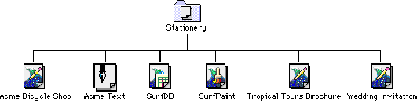

Appendix C - Installing OpenDoc
This appendix describes where on users' computer systems you should install the OpenDoc software that you create.
Software and PartsOpenDoc creates two folders on the user's hard disk. These are the Editors and Stationery folders. In general you should use the Installer software (available as a software developer's kit) to install all the pieces of OpenDoc software that you distribute, including stationery pads, part editors, part viewers, and online documentation. Installation software simplifies the installation task for users who choose to do a standard installation. It also helps users to focus on the document-centered aspect of OpenDoc because they don't have to deal with several pieces of software.
Install part editors and part viewers in the Editors folder, which can be either in the System Folder on the user's startup volume or on the root of any mounted volume. If you provide multiple editors or viewers, you can place them in your own part-editors folder within the Editors folder.
If you plan to distribute additional files with your part editor, such as extensions, create a separate folder in your part-editors folder in which to store these additional files. If you create shell plug-ins, install them in the OpenDoc Shell Plug-Ins folder within the Editors folder. Figure C-1 shows an example of the Editors folder structure for several installed part editors.
Figure C-1 Sample Editors folder structure
- Localization of folder names
- The names of the Editors folder, the OpenDoc folder, and the Stationery folder may be different on different localized systems, but their relative positions will not. Your installation procedures should not rely on these specific folder names.


Install any stationery pads that you distribute with your part in your own folder within the Stationery folder. Users can move the location of this folder or store stationery documents elsewhere if they wish to do so. Figure C-2 shows an example of the Stationery folder with stationery pads installed.Figure C-2 Sample Stationery folder structure

If you distribute any electronic documents, such as ReadMe files, that describe your parts, install them in the Stationery folder. When you place a document in your folder, you must choose a name that relates to your parts or part editors. For example, you could create a document with the name SurfWriter ReadMe.OpenDoc creates a Documents folder either on the root level of the user's hard disk or on the desktop. Because users can store their documents anywhere, this folder is optional. It exists to encourage users to store the documents they create separately from the stationery and the part editors.